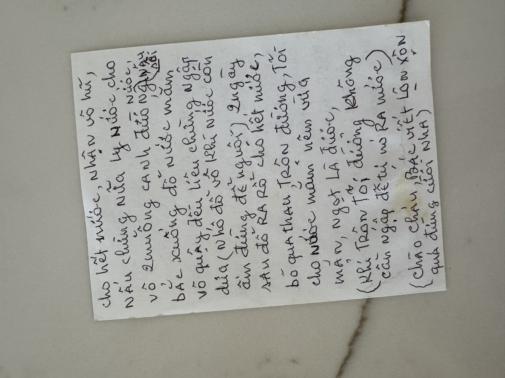

← Back to recipes

Dưa Mắm
Fermented Vegetables
From Mẹ — Oanh
Nguyên liệu · Ingredients
- Cucumbers (dưa leo)
- Salt (muối), enough for a moderately salty brine
- Water, enough to submerge
- A small pinch of alum (phèn chua)
- 2 tablespoons sugar (đường)
- Fish sauce (nước mắm), to taste
Cách làm · Instructions
- Cut each cucumber in half lengthwise. Scrape out the seeds with a spoon. Slice thin (not too thin). Pack tightly into a clean jar.
- Make a salt brine (moderately salty, not too much). Add a small pinch of alum (phèn chua), remove from heat. Pour over the cucumbers until submerged. Place a plate on top to press them down.
- Ferment at room temperature for 1–2 days. Then drain completely.
- Press out excess water, then pack back into the jar.
- Heat about half a cup of water with 2 tablespoons sugar. Add fish sauce, adjust to taste (should be balanced salty and sweet). Pour over the cucumbers while still warm — don't let it cool first.
- After 2 more days, drain and serve. Adjust with more sugar and fish sauce if needed.
Công thức gốc · Original handwritten recipe

❦
A recipe from Mẹ's kitchen